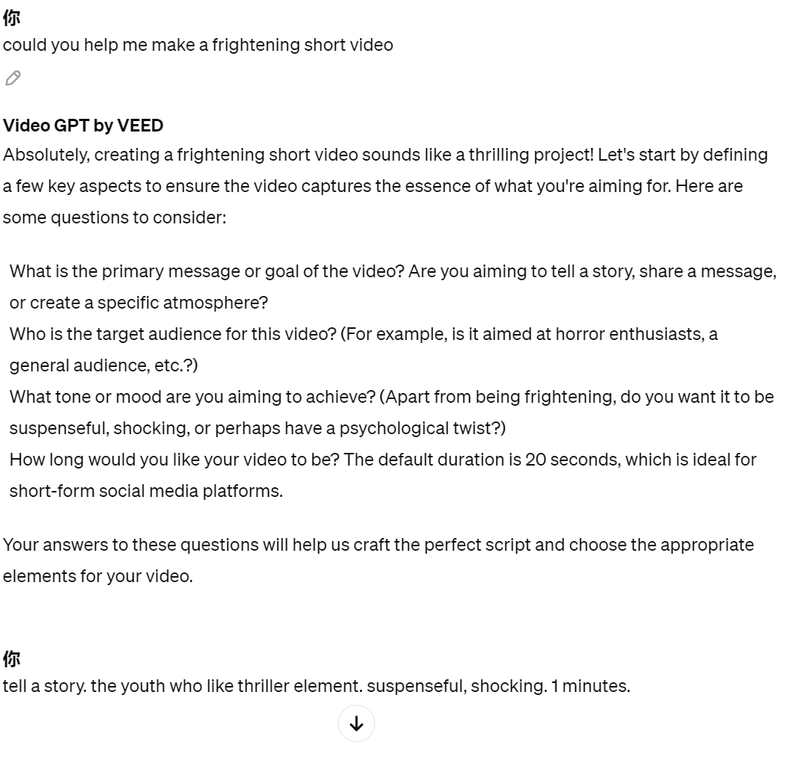

|
Video Maker - inside AI is a plug-in of the chatGPT to transform users' ideas into captivating,
fully produced narrated videos with the help of InVideo AI,
as a creative partner in video production.
The users can provide the topic, and this add-on craft two different narrative ideas, complete with
suggested durations,
mostly focusing on creating engaging content suitable for YouTube Shorts, ranging from 30 to 60 seconds. Of
course,
it can also accommodate longer formats if that's what users are looking for.
|

Figure2: this screenshot was cut from chatGPT
|